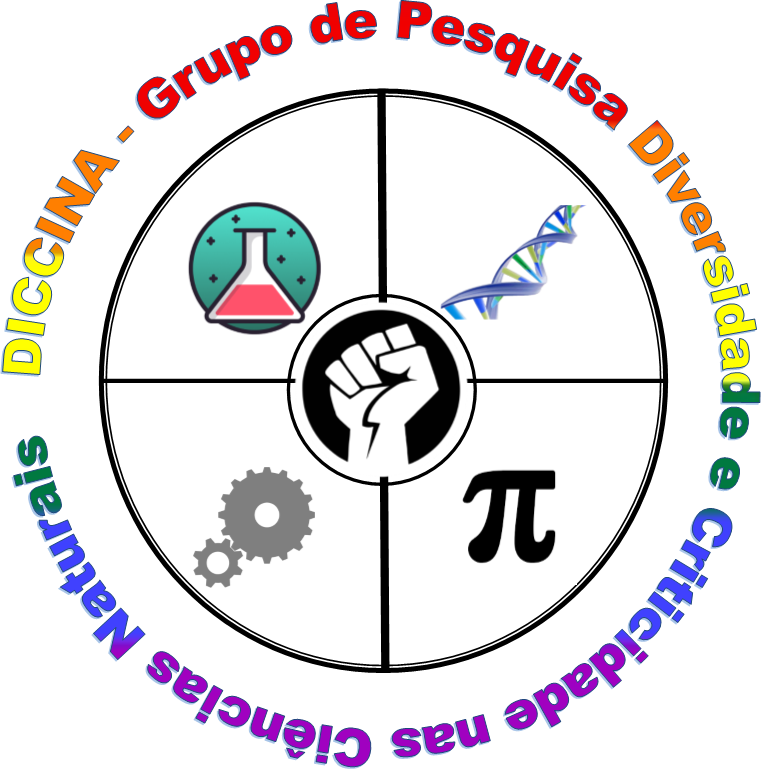

Diversidade e Criticidade nas Ciências Naturais
PPGEFHC | UFBA | UEFSO Grupo de Pesquisa Diversidade e Criticidade nas Ciências Naturais (DICCINA) é composto por estudantes da pós-graduação, graduação e docentes que pesquisam o ensino de ciências a partir de uma perspectiva antiopressora da realidade social.
Investigamos as relações entre ciência, sociedade e educação, pautadas pela criticidade e pelo respeito à diversidade.
O grupo conta com as pesquisadoras Dra. Katemari Rosa, professora do Instituto de Física da UFBA, e Dra. Paloma Nascimento dos Santos, professora do Instituto de Química da UFBA. Ambas são docentes permanentes do Programa de Pós-graduação em Ensino, Filosofia e História das Ciências (PPGEFHC).
📅 Data: 30/03/2026 | 📍 Local: Sala de Reuniões - Instituto de Física
Pauta: Apresentação DICCINA, histórico e linhas de pesquisa.
Planejamento e cronograma 2026.
Projeto: "Escrevivências de mulheres negras nas licenciaturas em Física, Matemática e Química da Universidade Federal do Oeste da Bahia."
Currículo LattesProjeto: "Atraques Epistêmicos na Educação em Ciências"
Currículo Lattes| Elton Bernardo Santos da Silva | Mestrado | 2020 - 2022 | Identidades Encruzilhadas: intersecção entre as identidades étnico-raciais e as identidades docentes de professores(as) de química da cidade de Salvador-BA. |
|---|---|---|---|
| Rebeca de Magalhães Dourado | Graduação | 2020 - 2022 | Representações sociais sobre deficiência de futuros docentes de física |